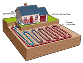
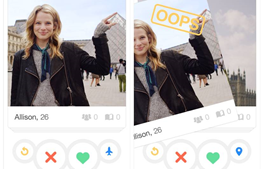
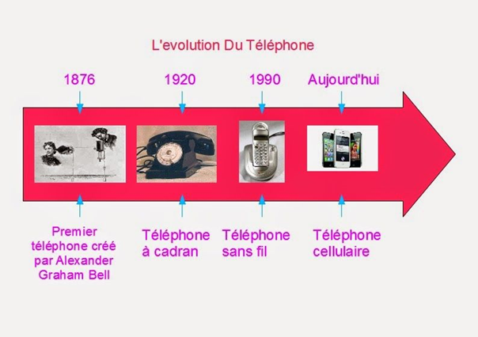

Partie I : Ce qui a changé dans le cadre privé
1. Le confort à la maison
Exemple 1 : Loin de ces maisons
rustiques du XXe siècle les progrès technologiques ont permis d’améliorer radicalement
le confort des maisons grâce notamment à la domotique. C’est l’automatisation des techniques
de gestion d’une habitation dans le but d’améliorer le confort, la sécurité et la
communication. Par exemple, la création des technologies de surveillance a permis
d’augmenter la fiabilité des systèmes de sécurité et ainsi de rassurer les habitants
lorsqu’ils ne sont pas à leur domicile. On peut également évoquer le développement
d’applications mobiles liées aux appareils de la maison pour contrôler l’ouverture
fermeture des volets, de la lumière, le réglage du chauffage ou même verrouiller les
serrures de la maison à distance.
| Vidéo-surveillance (application mobile) | |
| Contrôle du chauffage | Contrôle serrure par mobile |
Exemple 2 : Les technologies
permettent aussi de s’adapter à des besoins médicaux tels que les handicaps ou la
vieillesse. On peut prendre pour exemple les monte-escaliers Stanah qui permettent
aux personnes à mobilité réduite de rejoindre des étages différents. Le principe est
de combler de potentielles déficiences grâce à la technologie afin de mettre tout le
monde au même niveau. On peut également citer les maisons aménagées avec un système
de rail qui permettent de relever facilement les personnes à mobilité réduite.
| Monte-escalier | Rail pour personne à mobilité réduite |
Exemple 3 : L’amélioration de la
technologie permet aussi de pouvoir faire des économies chaque mois en charges énergie tout
en respectant l’environnement. Par exemple les panneaux solaires permettent de produire de
manière autonome après une installation assez onéreuse. Il existe également la géothermie
qui permet de produire de manière propre et responsable en utilisant la chaleur du sol. De
plus on peut également installer des éoliennes de taille réduite afin d’accumuler un peu
plus d’électricité et parfois d’en tirer un profit en faisant bénéficier les distributeurs
d’énergie. Tous ces procédés permettent de réduire activement ses factures et de participer
à la transition énergétique.
| Eolienne taille réduite pour particuliers | |
| Panneaux solaires | Concept géothermie |
2. Changement des loisirs
Exemple 1 : Auparavant, à l’époque
des premiers jeux vidéo lorsque des joueurs voulaient jouer ensemble et s’affronter dans un
jeu ils n’avaient d’autre choix que de se réunir dans la même pièce pour pouvoir interagir.
Aujourd’hui à l’ère du jeu vidéo et du streaming, les jeux favorisent davantage les
interactions sociales à travers les jeux en réseau, notamment les MMORPG, en participant
à des compétitions avec d’autres joueurs à un niveau national, voire mondial.
| Jeu rétro (Donkey Kong) | Jeu en ligne (WoW) |
| Tournoi majeur Counter Strike | |
Exemple 2 : Les réseaux sociaux
ont permis de changer notre façon de discuter de se sociabiliser avec les autres. Désormais
la majorité des interactions se font sur les réseaux. En 2007, Facebook comptait déjà
presque 2 milliards d’utilisateurs actifs. Aujourd’hui de plus en plus de réseaux sociaux
font leur apparition sur le marché avec divers concepts et s’immiscent de plus en plus
dans nos vies.
| Locaux Facebook | Réseaux sociaux |
Exemple 3 : L’évolution de la
technologie a permis de créer de nouveaux loisirs et de nouveaux moyens d’appréhender les
jeux vidéo et le multimédia à travers « la VR », ou plus simplement « la Réalité Virtuelle »
qui permet aux utilisateurs de s’immerger complètement dans une autre réalité pour une
meilleur expérience de jeu. Même si la VR n’en est qu’a ses prémices, on commence à avoir
de plus en plus de possibilités d’utilisation.
| Casque VR | Jeu en réalité virtuelle |
3. Les relations sociales
Exemple 1 : Avec l’apparition des
nouvelles technologies, s’il y a bien quelque chose qui n’a cessé d’évoluer en s’adaptant
aux changements causés par le temps, c’est bien les relations sociales et humaines.
Ces relations sociales ont été bouleversées au cours de ces dernières années grâce aux
applications de rencontre. En effet le développement de ces applications de, telles que
Tinder, ont permis aux gens de faire de nouvelles rencontres avec des personnes partageant
les mêmes centres d’intérêts et attendant les mêmes choses de la vie. L’avantage de ces
applications est sa rapidité et le fait de permettre de rencontrer des personnes habitant
dans d’autres villes, élargissant ainsi le champ d’action des rencontres, sans avoir à se
déplacer.
| Appel en FaceTime | Interface Tinder |
Exemple 2 : D’autre part,
l’apparition de nouvelles applications communications, telles que Skype, Discord ou
encore Messenger, ont grandement facilités le contact à distance, permettant ainsi de
communiquer plus aisément, et donc de maintenant le contact, avec sa famille et ses amis
même sur de longues distances. Ces types d’applications nécessitent une connexion internet
omniprésente aujourd’hui et restent malgré tout une alternative aux réseaux de messagerie
classiques proposés par les opérateurs.
| Interface Twitter | Logiciel Discord |
Exemple 3 : Les moyens de
communication ont énormément changé au fil du temps à travers différents supports répondant
à des nouveaux besoins en constante évolution, en passant du minitel, du téléphone fixe, de
l’ordinateur au smartphone. De plus, les marques les plus importantes sortent des modèles de
plus en plus performants à intervalle rapproché et recherchent donc à perfectionner nos
outils de communication pour les rendre de plus en plus importants.
| Frise chronologique de l’évolution du téléphone |